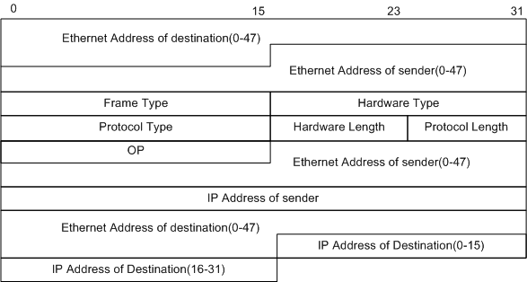
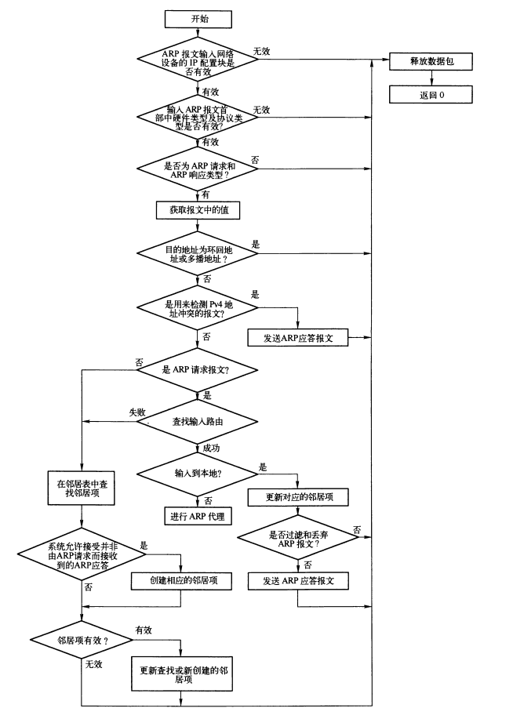

ARP：地址解析协议
Table of Contents
以太网传输IP数据报时需要48位的以太网地址，以太网帧的目的地址通过目的IP来查询得到，所以IP地址和以太网地址之间存在映射关系，ARP表就保存两者的对应关系，ARP协议用来确定两者的关系。
1. ARP报文格式

Figure 1: ARP报文格式
| 字段 | 长度（bit） | 含义 |
|---|---|---|
| Ethernet Address of destination | 48比特 | 目的以太网地址。发送ARP请求时，为广播的MAC地址，0xFF.FF.FF.FF.FF.FF。 |
| Ethernet Address of sender | 48比特 | 源以太网地址。 |
| Frame Type | 16比特 | 表示后面数据的类型。对于ARP请求或应答来说，该字段的值为0x0806。 |
| Hardware Type | 16比特 | 表示硬件地址的类型。对于以太网，该类型的值为“1”。 |
| Protocol Type | 16比特 | 表示发送方要映射的协议地址类型。对于IP地址，该值为0x0800。 |
| Hardware Length | 8比特 | 表示硬件地址的长度，单位是字节。对于ARP请求或应答来说，该值为6。 |
| Protocol Length | 8比特 | 表示协议地址的长度，单位是字节。对于ARP请求或应答来说，该值为4。 |
| OP | 16比特 | 操作类型:
|
| Ethernet Address of sender | 48比特 | 发送方以太网地址。这个字段和ARP报文首部的源以太网地址字段是重复信息。 |
| IP Address of sender | 32比特 | 发送方的IP地址。 |
| Ethernet Address of destination | 48比特 | 接收方的以太网地址。发送ARP请求时，该处填充值为0x00.00.00.00.00.00。 |
| IP Address of destination | 32比特 | 接收方的IP地址。 |
发送ARP请求时，发送方填入发送方以太网地址、发送方IP地址以及目标IP地址。 目标主机接收到这个ARP广播包时，会在响应报文中填上自己的以太网地址，即目标以太网地址。
/* * This structure defines an ethernet arp header. */ struct arphdr { __be16 ar_hrd; /* format of hardware address */ __be16 ar_pro; /* format of protocol address */ unsigned char ar_hln; /* length of hardware address */ unsigned char ar_pln; /* length of protocol address */ __be16 ar_op; /* ARP opcode (command) */ #if 0 /* * Ethernet looks like this : This bit is variable sized however... */ unsigned char ar_sha[ETH_ALEN]; /* sender hardware address */ unsigned char ar_sip[4]; /* sender IP address */ unsigned char ar_tha[ETH_ALEN]; /* target hardware address */ unsigned char ar_tip[4]; /* target IP address */ #endif };
2. 系统参数
- arp_filter 是否允许从其他网络设备输出ARP应答。
- 0 允许从其他网络设备输出ARP应答。
- 1 允许有多个网络设备在同一子网上，基于ARP的源IP地址来获取路由，输出ARP应答。
- arp_announce 输出ARP请求时，从IP数据报中确定源IP地址的规则。
- 0 使用配置在任意网络设备上的任意本地地址。
- 1 尽量使用与目标IP在同一个子网的本地地址的网络设备，目标主机要求ARP请求中的源IP地址是配置在接收网络设备上。 此时会检查所有的子网，如果没有，则根据下面的规则选择源地址。
- 2 使用最合适的本地地址作为源地址。这种规则下，会忽略IP数据报中的源地址，而尝试选择本地地址。查找所有输出网络设备且在同一子网的主IP地址，如果找不到合适的本地地址，则查找所有网络设备。
- arp_ignore 接收ARP请求报文的过滤规则。
- 0 答复目标IP地址是配置在任意网络设备任意的本地地址。
- 1 只答复目标IP地址是配置在输入网络设备上的本地地址。
- 2 只答复目标IP地址是配置在输入网络设备上的本地地址，并且在这个接口上与发送发的IP地址在同一子网内。
- 3 不回复本地地址类型RT_SCOPE_HOST的目标地址，只答复地址类型RT_SCOPE_LINK的目标地址。
- 4-7 保留。
- 8 不回复所有的本地地址。
- arp_accept 处理非ARP请求而接收到的ARP应答。
- 0 丢弃非ARP请求而接收到的ARP应答。
- 1 接收非ARP请求而接收到的ARP应答。
- proxy_arp 是否允许进行arp代理。
3. ARP初始化
/* * Called once on startup. */ static struct packet_type arp_packet_type = { .type = __constant_htons(ETH_P_ARP), .func = arp_rcv, }; void __init arp_init(void) { neigh_table_init(&arp_tbl); dev_add_pack(&arp_packet_type); arp_proc_init(); neigh_sysctl_register(NULL, &arp_tbl.parms, NET_IPV4, NET_IPV4_NEIGH, "ipv4", NULL, NULL); register_netdevice_notifier(&arp_netdev_notifier); }
4. ARP的邻居项函数指针
ARP中，根据不同介质，提供了多种邻居项函数指针表的实例：
- arp_generic_ops 通用的邻居项函数指针表
- arp_hh_ops 缓存硬件首部的邻居项函数指针表
- arp_direct_ops 不支持ARP的邻居项函数指针表
- arp_broken_ops 支持业余无线电设备的邻居项函数指针表
static struct neigh_ops arp_generic_ops = { .family = AF_INET, .solicit = arp_solicit, .error_report = arp_error_report, .output = neigh_resolve_output, .connected_output = neigh_connected_output, .hh_output = dev_queue_xmit, .queue_xmit = dev_queue_xmit, }; static struct neigh_ops arp_hh_ops = { .family = AF_INET, .solicit = arp_solicit, .error_report = arp_error_report, .output = neigh_resolve_output, .connected_output = neigh_resolve_output, .hh_output = dev_queue_xmit, .queue_xmit = dev_queue_xmit, }; static struct neigh_ops arp_direct_ops = { .family = AF_INET, .output = dev_queue_xmit, .connected_output = dev_queue_xmit, .hh_output = dev_queue_xmit, .queue_xmit = dev_queue_xmit, }; struct neigh_ops arp_broken_ops = { .family = AF_INET, .solicit = arp_solicit, .error_report = arp_error_report, .output = neigh_compat_output, .connected_output = neigh_compat_output, .hh_output = dev_queue_xmit, .queue_xmit = dev_queue_xmit, };
5. ARP表
struct neigh_table arp_tbl = { .family = AF_INET, .entry_size = sizeof(struct neighbour) + 4/*IPv4地址长度*/, //arp邻居项大小 .key_len = 4, .hash = arp_hash, .constructor =arp_constructor, //ARP邻居项初始化函数 .proxy_redo = parp_redo, //ARP代理报文的延时处理函数 .id = "arp_cache", .parms = {//arp表特性相关参数 .tbl = &arp_tbl, .base_reachable_time =30 * HZ, .retrans_time = 1 * HZ, .gc_staletime = 60 * HZ, .reachable_time = 30 * HZ, .delay_probe_time = 5 * HZ, .queue_len = 3, .ucast_probes = 3, .mcast_probes = 3, .anycast_delay = 1 * HZ, .proxy_delay = (8 * HZ) / 10, .proxy_qlen = 64, .locktime = 1 * HZ, }, .gc_interval =30 * HZ, .gc_thresh1 = 128, .gc_thresh2 = 512, .gc_thresh3 = 1024, };
6. 函数
6.1. arp_error_report()
当邻居项缓存中还存在有未发送的报文，而该邻居无法访问时会调用该函数。
该函数用来项三层报告错误，主要通过调用 dst_link_failure() 函数来实现。
static void arp_error_report(struct neighbour *neigh, struct sk_buff *skb) { dst_link_failure(skb); kfree_skb(skb); }
6.2. arp_solicit()
arp_solicit()用来发送ARP请求，通过邻居项状态定时器的处理函数调用。
// neigh: ARP请求的目的邻居项 skb: 缓存在该邻居项中的待发送报文，用来获取该skb的源IP地址 static void arp_solicit(struct neighbour *neigh, struct sk_buff *skb) { __be32 saddr = 0; u8 *dst_ha = NULL; struct net_device *dev = neigh->dev; __be32 target = *(__be32*)neigh->primary_key; int probes = atomic_read(&neigh->probes); struct in_device *in_dev = in_dev_get(dev); if (!in_dev) //该邻居项的网络设备的IP配置块是否有效 return; switch (IN_DEV_ARP_ANNOUNCE(in_dev)) { //获取 arp_anournce 系统参数，选择源IP地址 default: case 0: /* By default announce any local IP */ if (skb && inet_addr_type(skb->nh.iph->saddr) == RTN_LOCAL) saddr = skb->nh.iph->saddr; break; case 1: /* Restrict announcements of saddr in same subnet */ if (!skb) break; saddr = skb->nh.iph->saddr; if (inet_addr_type(saddr) == RTN_LOCAL) { /* saddr should be known to target */ if (inet_addr_onlink(in_dev, target, saddr)) break; } saddr = 0; break; case 2: /* Avoid secondary IPs, get a primary/preferred one */ break; } if (in_dev) in_dev_put(in_dev); if (!saddr) saddr = inet_select_addr(dev, target, RT_SCOPE_LINK); //ARP请求报文重传次数超过阈值，则停止发送 if ((probes -= neigh->parms->ucast_probes) < 0) { if (!(neigh->nud_state&NUD_VALID)) printk(KERN_DEBUG "trying to ucast probe in NUD_INVALID\n"); dst_ha = neigh->ha; read_lock_bh(&neigh->lock); } else if ((probes -= neigh->parms->app_probes) < 0) { neigh_app_ns(neigh); return; } //创建ARP报文并将其输出 arp_send(ARPOP_REQUEST, ETH_P_ARP, target, dev, saddr, dst_ha, dev->dev_addr, NULL); if (dst_ha) read_unlock_bh(&neigh->lock); }
6.3. arp_ignore()
此函数用来根据过滤规则对输入的ARP报文的源、目的IP地址进行确认。
static int arp_ignore(struct in_device *in_dev, struct net_device *dev, __be32 sip, __be32 tip) { int scope; switch (IN_DEV_ARP_IGNORE(in_dev)) { //获取过滤规则 case 0: /* Reply, the tip is already validated */ return 0; case 1: /* Reply only if tip is configured on the incoming interface */ sip = 0; scope = RT_SCOPE_HOST; break; case 2: /* * Reply only if tip is configured on the incoming interface * and is in same subnet as sip */ scope = RT_SCOPE_HOST; break; case 3: /* Do not reply for scope host addresses */ sip = 0; scope = RT_SCOPE_LINK; dev = NULL; break; case 4: /* Reserved */ case 5: case 6: case 7: return 0; case 8: /* Do not reply */ return 1; default: return 0; } return !inet_confirm_addr(dev, sip, tip, scope); }
6.4. arp_filter()
arp_filter根据ARP请求报文中的源IP地址和目的IP地址，查找输出路由，过滤掉查找路由失败，或者是查到的路由输出设备与ARP请求的输入设备不同的 ARP请求。
7. IPv4中邻居项的初始化
arp_constructor()是ARP的邻居初始化函数， 用来初始化新的neighbour结构的实例，在邻居表创建函数neigh_create()中被调用。
static int arp_constructor(struct neighbour *neigh) { __be32 addr = *(__be32*)neigh->primary_key; struct net_device *dev = neigh->dev; struct in_device *in_dev; struct neigh_parms *parms; neigh->type = inet_addr_type(addr); //根据邻居地址获取其类型 rcu_read_lock(); in_dev = __in_dev_get_rcu(dev); if (in_dev == NULL) { //邻居输出设备的IP配置块是否有效。 rcu_read_unlock(); return -EINVAL; } parms = in_dev->arp_parms; //获取邻居配置参数 __neigh_parms_put(neigh->parms); neigh->parms = neigh_parms_clone(parms); //克隆邻居配置参数 rcu_read_unlock(); if (dev->hard_header == NULL) { //无需支持ARP neigh->nud_state = NUD_NOARP; neigh->ops = &arp_direct_ops; //设置邻居项的函数指针表 neigh->output = neigh->ops->queue_xmit; //设置邻居项输出接口 } else { /* Good devices (checked by reading texts, but only Ethernet is tested) ARPHRD_ETHER: (ethernet, apfddi) ARPHRD_FDDI: (fddi) ARPHRD_IEEE802: (tr) ARPHRD_METRICOM: (strip) ARPHRD_ARCNET: etc. etc. etc. ARPHRD_IPDDP will also work, if author repairs it. I did not it, because this driver does not work even in old paradigm. */ #if 1 /* So... these "amateur" devices are hopeless. The only thing, that I can say now: It is very sad that we need to keep ugly obsolete code to make them happy. They should be moved to more reasonable state, now they use rebuild_header INSTEAD OF hard_start_xmit!!! Besides that, they are sort of out of date (a lot of redundant clones/copies, useless in 2.1), I wonder why people believe that they work. */ switch (dev->type) { default: break; case ARPHRD_ROSE: #if defined(CONFIG_AX25) || defined(CONFIG_AX25_MODULE) case ARPHRD_AX25: #if defined(CONFIG_NETROM) || defined(CONFIG_NETROM_MODULE) case ARPHRD_NETROM: #endif neigh->ops = &arp_broken_ops; neigh->output = neigh->ops->output; return 0; #endif ;} #endif if (neigh->type == RTN_MULTICAST) { //组播类型 无需arp neigh->nud_state = NUD_NOARP; arp_mc_map(addr, neigh->ha, dev, 1); } else if (dev->flags&(IFF_NOARP|IFF_LOOPBACK)) { //无需ARP支持或者回环设备 neigh->nud_state = NUD_NOARP; memcpy(neigh->ha, dev->dev_addr, dev->addr_len); } else if (neigh->type == RTN_BROADCAST || dev->flags&IFF_POINTOPOINT) {//广播或者点对点 neigh->nud_state = NUD_NOARP; memcpy(neigh->ha, dev->broadcast, dev->addr_len); } if (dev->hard_header_cache) //如果支持硬件硬件首部缓存 neigh->ops = &arp_hh_ops; else neigh->ops = &arp_generic_ops; if (neigh->nud_state&NUD_VALID) //根据状态设置输出接口 neigh->output = neigh->ops->connected_output; else neigh->output = neigh->ops->output; } return 0; }
8. ARP报文创建
arp_create() 用来创建一个完整的ARP报文。
/* * Create an arp packet. If (dest_hw == NULL), we create a broadcast * message. */ struct sk_buff *arp_create(int type, //ARP协议操作码 如ARPOP_REPLY、ARPOP_REQUEST等。 int ptype,//三层协议类型 __be32 dest_ip, //目的IP struct net_device *dev, //输出网络设备 __be32 src_ip, //ARP报文源IP unsigned char *dest_hw, //ARP报文目的硬件地址 unsigned char *src_hw, //ARP报文源硬件地址 unsigned char *target_hw) //target_hw 填充到ARP报文 { struct sk_buff *skb; struct arphdr *arp; unsigned char *arp_ptr; /* Allocate a buffer */ skb = alloc_skb(sizeof(struct arphdr)+ 2*(dev->addr_len+4) + LL_RESERVED_SPACE(dev), GFP_ATOMIC); skb_reserve(skb, LL_RESERVED_SPACE(dev)); skb->nh.raw = skb->data; arp = (struct arphdr *) skb_put(skb,sizeof(struct arphdr) + 2*(dev->addr_len+4)); skb->dev = dev; skb->protocol = htons(ETH_P_ARP); if (src_hw == NULL) src_hw = dev->dev_addr; if (dest_hw == NULL) dest_hw = dev->broadcast; /* 填充ARP报文的硬件首部 */ if (dev->hard_header && dev->hard_header(skb,dev,ptype,dest_hw,src_hw,skb->len) < 0) goto out; /* 根据网络设备类型，设置ARP报文的硬件地址类型和协议类型。*/ switch (dev->type) { default: arp->ar_hrd = htons(dev->type); arp->ar_pro = htons(ETH_P_IP); break; case ARPHRD_AX25: arp->ar_hrd = htons(ARPHRD_AX25); arp->ar_pro = htons(AX25_P_IP); break; case ARPHRD_NETROM: arp->ar_hrd = htons(ARPHRD_NETROM); arp->ar_pro = htons(AX25_P_IP); break; case ARPHRD_FDDI: arp->ar_hrd = htons(ARPHRD_ETHER); arp->ar_pro = htons(ETH_P_IP); break; case ARPHRD_IEEE802_TR: arp->ar_hrd = htons(ARPHRD_IEEE802); arp->ar_pro = htons(ETH_P_IP); break; } //设置ARP报文首部及其他字段 arp->ar_hln = dev->addr_len; arp->ar_pln = 4; arp->ar_op = htons(type); arp_ptr=(unsigned char *)(arp+1); memcpy(arp_ptr, src_hw, dev->addr_len); arp_ptr+=dev->addr_len; memcpy(arp_ptr, &src_ip,4); arp_ptr+=4; if (target_hw != NULL) memcpy(arp_ptr, target_hw, dev->addr_len); else memset(arp_ptr, 0, dev->addr_len); arp_ptr+=dev->addr_len; memcpy(arp_ptr, &dest_ip, 4); return skb; out: kfree_skb(skb); return NULL; }
9. ARP的输出
arp_send()先创建一个ARP报文，然后发送。
/* * Create and send an arp packet. */ void arp_send(int type, int ptype, __be32 dest_ip, struct net_device *dev, __be32 src_ip, unsigned char *dest_hw, unsigned char *src_hw, unsigned char *target_hw) { struct sk_buff *skb; if (dev->flags&IFF_NOARP) //无需ARP支持 return; //创建ARP报文 skb = arp_create(type, ptype, dest_ip, dev, src_ip, dest_hw, src_hw, target_hw); if (skb == NULL) { return; } //输出ARP报文 arp_xmit(skb); }
10. ARP的输入
10.1. arp_rcv()
/* * arp_rcv 从二层接收并处理一个ARP报文。 */ static int arp_rcv(struct sk_buff *skb, //ARP报文的SKB struct net_device *dev, //接收ARP报文的网络设备 struct packet_type *pt, //packet_type结构的实例， ARP为 arp_packet_type struct net_device *orig_dev) //接收ARP报文的原始网络设备 { struct arphdr *arp; /* ARP header, plus 2 device addresses, plus 2 IP addresses. */ if (!pskb_may_pull(skb, (sizeof(struct arphdr) + (2 * dev->addr_len) + (2 * sizeof(u32))))) goto freeskb; arp = skb->nh.arph; if (arp->ar_hln != dev->addr_len //硬件地址长度是否匹配 dev->flags & IFF_NOARP || //是否支持ARP skb->pkt_type == PACKET_OTHERHOST || //是否转发 skb->pkt_type == PACKET_LOOPBACK || //是否来自回环接口 arp->ar_pln != 4) //ARP的协议地址长度必须为4 goto freeskb; //ARP报文是否是克隆的 if ((skb = skb_share_check(skb, GFP_ATOMIC)) == NULL) goto out_of_mem; memset(NEIGH_CB(skb), 0, sizeof(struct neighbour_cb)); //经过netfilter 的NF_ARP_IN处理，之后转到arp_process处理 return NF_HOOK(NF_ARP, NF_ARP_IN, skb, dev, NULL, arp_process); freeskb: kfree_skb(skb); out_of_mem: return 0; }
10.2. arp_process()

Figure 2: arp_process流程图
11. ARP的ioctl
- SIOCDARP 调用arp_req_delete()删除ARP表的指定邻居项。
- SIOCSARP 调用arp_req_set()将新的表项加入ARP表，或者修改arp表项。
- SIOCGARP 调用arp_req_get()从ARP表获取指定表项。
12. 外部事件
设备IP地址变化时，ARP模块通过注册到通知链中的arp_netdev_notifier受到通知。arp_netdev_event()函数用来处理 NETDEV_CHANGEADDR 事件， 该函数删除并禁用网络设备相关的邻居项，同时刷新路由缓存，如果邻居项引用计数大于1，则设置 neigh_blackhole()作为邻居项的output， 之后该邻居项的输出接口会直接丢弃报文。
13. 路由表项与邻居项的绑定
路由模块中，每当添加一条输出路由或者单播转发路由时，会尝试将该路由与该路由目的地址相对应的邻居项绑定。 arp_bind_neighhour() 实现了路由表项和邻居项的绑定，如果邻居项不存在则创建。绑定之后，就可以通过路由缓存获取邻居项的输出函数。